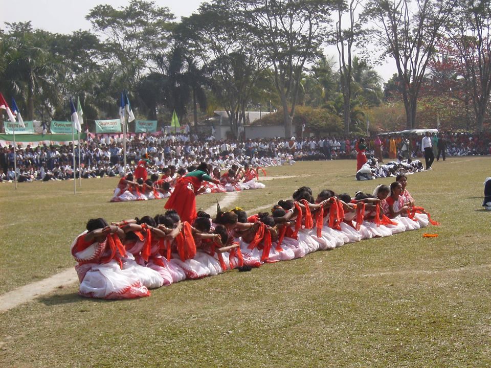

I'm a student of UIU. I live in Sayednagar.
My home district is in Tangail.
I've completed my SSC from my home town. My school name was Velayet Hossain Bahumukhi Uccha Biddalay.
Here's the facebook link to our school:

After SSC, I moved to Dhaka and completed my HSC from BAF Shaheen College Dhaka.
Here's the facebook link to our college:
Honestly, it was a diffiucult decision to make. Although I loved Computer Science, but my family wasn't willing to let me
"risk" my career.This is because CS is considered a decilining field in my country. Most of the student opt it if they don't
have any other choice. Consequently, they fail to get what they would and complain about lack of employment.
But i made
up my mind to not listen to anyone and let me decide what's in my best interest. And i did!